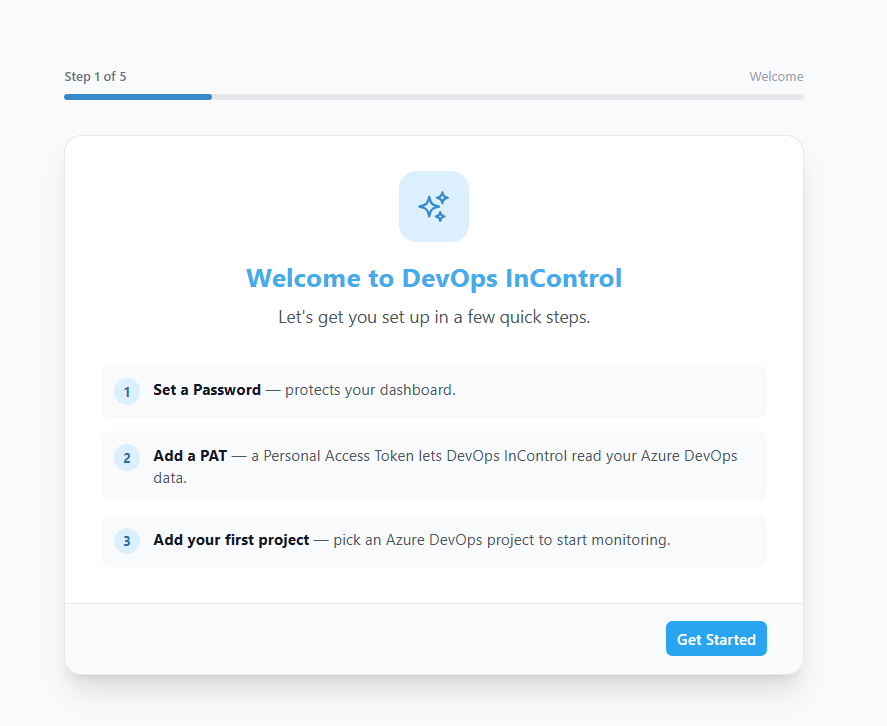

First-Time Setup
When you open DevOps InControl for the first time, you are guided through a five-step setup wizard. This wizard helps you connect to your Azure DevOps organisation and configure your first project.

The setup wizard welcome screen.
The Five Steps
- Welcome — A brief introduction explaining what DevOps InControl does. Simply click Next to continue.
-
Set a Password (API Key) — Choose a password that protects your dashboard. You will need this password each time you open DevOps InControl from a new browser or after clearing your cookies.
Tip Pick a password you can remember. If you lose it, it can only be reset from the server.
-
Connect to Azure DevOps (PAT) — Enter your Azure DevOps Personal Access Token (PAT) and your organisation name.
A PAT is like a special password that allows DevOps InControl to read data from Azure DevOps on your behalf. Here is how to create one:
- Go to your Azure DevOps portal and click your profile picture in the top-right corner.
- Select Personal access tokens.
- Click New Token.
- Give it a name (e.g. "DevOps InControl"), set an expiration date, click Show all scopes, and grant these permissions:
- Build — Read (pipeline runs overview)
- Code — Read (pull request monitoring)
- Graph — Read (group membership resolution)
- Identity — Read (permission checks)
- Project and Team — Read (project and team listing)
- Release — Read (release deployments overview)
- Security — Manage (repo & area permission audits)
- Wiki — Read (wiki permission checks)
- Work Items — Read & Write (backlog checks, sprint monitoring, tag management)
- Click Create and copy the token.
Important Your PAT is stored securely on the server using Windows encryption. It is never visible in plain text after you save it. - Add Your First Project — Select your Azure DevOps organisation and project from the dropdown lists. Choose which checks you want to enable (you can change these later).
- Done! — Setup is complete. Click Go to Dashboard to start monitoring.
What You Can Change Later
| Setting | Where to Find It |
|---|---|
| Password (API Key) | Click the gear icon in the top-right corner to open Settings. |
| Azure DevOps connection (PAT) | Settings → General tab. |
| Projects and checks | Configuration screen in the sidebar menu. |
| Dark mode | Click the sun/moon icon in the top-right corner of the header bar. |
Tip
You can re-run the setup wizard at any time by navigating to the
/setup URL in your browser.